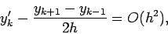
Here, we just make the substitutions
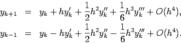
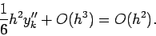
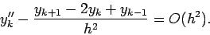
This is very similar to the previous problem, except that one expands
one step further.
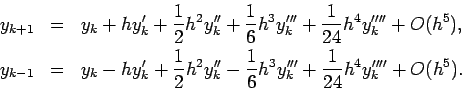
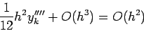
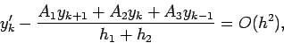
First, we need to expand yk+1 and yk-1.
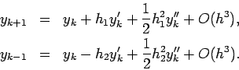
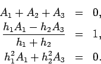
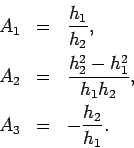
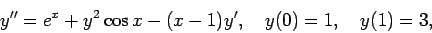
See matlab m-file and diary for this one. I implemented a system for y and
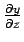
because I knew I would need it for the next problem. One can see that the secant method finds a correct value of y'(0) (0.17978) in a few steps, so that y(1) is 3 to 5 digits of precision. Of course, one could continue the process to gain whatever precision one needs.
This is the same as the previous problem with similar results except we use Newton's method.
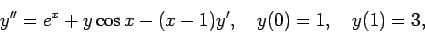
For this problem, we set up a linear system by writing out each derivative and second derivative as a second order finite difference. Then, we solve the linear system using Gaussian elimination. The matlab diary and m files are posted on the web.